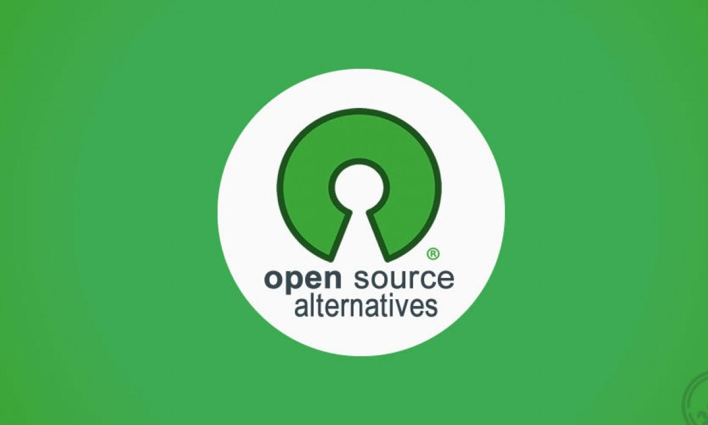

Job is Selfish, Contribution is Better


Of course, it is easy for someone who is having trouble finding his dream job and who is not willing to sell his time to the industrial complex because of eating, and because of this community that sees him as someone who won't put the effort of contributing to Buy this rice that is produced far from his born country. This man prefers to learn how a religious belief and practice impacted the introduction of the innovation of the green revolution of the government of Indonesia in Bali where a temple historically held for centuries the production of water and the irrigation system for the culture of rice before better pesticides and seed were intended to be introduced. This man prefers to learn How boiled water failed to be introduced into this African village where people had beliefs about boiled water because for them drinking it was a source of sickness and it was hard for them to accept to boil water because of bacteria and germs. When I am learning all of these as well as all these theories and philosophies and science it is not because of a job to be done or to take but because of my willingness of being someone who contribute to the construction of the building blocks of a better world. If I was this executive at Microsoft or Apple or if I was the CTO of Google or LinkedIn I would never have time neither would I be thinking about caring about all these great scientists and passionate people doing things that matter for our better comprehension of the world we are living now and the one that we used to live years before and hoping to see the one that we will be living tomorrow. This is not about revenues, profits, stock options, and board meetings but about contribution, contribution only contribution for people who care, for those who think that we can because we simply are human beings. We can save this lion, we can host this cat or dog if you are braver than me why not host this lion. This would be your contribution to the preservation of species but even if I have learned about the theory of evolution of species, I think that my place is better at consuming ideas and producing the next ones that may be the base of some new initiatives that will create something that could make our life better. Being like that and having this lifestyle is not easy to live with if everybody around you talks about joblessness when you are thinking about contribution. If like me this is your case then know that you have someone who shares this opinion with you and let’s support each other. There are of course things more important than a job and one of them is contribution.
But if building this bot that will send your resume to all the companies of the world could help you be seen and maybe get your dream then while you are contributing let it work in the background if your computer is powerful enough for this to happen while you're contributing with your computer like what I am doing know by sharing with you these cheap words that I have produced hoping that they would bring you values. Values for creating this next thing as your contribution and the process of art would be working smoothly because I am a strong believer of this definition of art that I take from Seth Godin who take it from I don't know who and this definition it this
Art is a tool that gives us the ability to make things better, and to create something new on behalf of those who will create the next thing.
I am not looking for a job but contributing but if a job arises in my life I hope I will be ready to do it in time using the best practices based on the best theories but I would never achieve this without learning. Learning how to see and learning how to be seen by people who care and learning how I can be better at connecting with those who care for us to contribute more and better because we are contributors, not workers.
As a satirical provocation, I was tempted to write Job is dead long live Job and I did. Then contribution forever.
PS: this article is very likely inspired by Seth Godin because I have written it after have committed to write an article about his article entitled Tasks and initiatives and to make